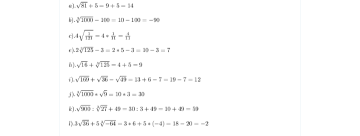

Odpowiedzi


Image Description
Wycieczka do Kalwarii i Wadowic
W dniu 22.09.2021r. cała nasza klasa 8a wraz z wychowawcą udała się na wycieczkę do Sanktuarium w Kalwarii Zebrzydowskiej oraz Domu Rodzinnego Jana Pawła II w Wadowicach.
wyjechaliśmy około godziny 8.00 wraz z pełnym bagażem pozytywnego nastroju i uśmiechów na twarzach. Jako pierwszy planowaliśmy zwiedzić Klasztor w Kalwarii Zebrzydowskiej. Jego początki sięgają XVII wieku, gdy na miejscu, gdzie znajduje się on obecnie, wzniesiono mały kościółek. Dziś jest on miejscem odwiedzanym przez setki tysięcy pielgrzymów rocznie, wpisanym na listę dziedzictwa kulturowego UNESCO.
Gdy dotarliśmy do celu, wyruszyliśmy najpierw śladem Dróżek Matki Bożej. Abyśmy mogli jak najpiękniej przeżyć to wydarzenie, w drodze towarzyszył nam jeden z Braci Zakonnych, który odprawił dla nas Drogę Krzyżową wraz ze wspaniałymi rozważaniami. Każdy z nas, w drodze na Golgotę, niósł jedną wybraną intencję, w której ofiarował przebycie tej trasy, momentami bardzo trudnej i stromej.
Przejście Dróżek zajęło nam ok. 2 godzin. Niestety pod koniec, zaczął padać deszcz, lecz nie przeszkodził on nam w modlitwie.
Gdy powróciliśmy do Klasztoru, po krótkiej przerwie, czekała na nas kolejna atrakcja – zwiedzanie budynku sanktuarium. Kwestie związane z jego historią przybliżył nam przewodnik, który w barwny sposób wspomniał o początkach sanktuarium oraz tym jak wygląda i działa on obecnie. Przewodnik pokazał nam różne pomieszczenia klasztorne, w tym te, w których przebywał Jan Paweł II podczas swoich pielgrzymek do tego miejsca. Mieliśmy także okazję pokłonić się przed Cudownym Obrazem oraz obejrzeć wspaniałą makietę prezentującą Sanktuarium oraz całość Dróżek Kalwaryjskich.
Po zakończeniu zwiedzania wsiedliśmy do autobusu i wyruszyliśmy w Wadowic. Planowaliśmy tam zobaczyć Dom Rodzinny Jana Pawła II. W międzyczasie zaliczyliśmy obowiązkowy punkt każdego pobytu w Wadowicach, tj. spróbowanie słynnych kremówek. Zgodnie z tym czego się spodziewaliśmy były one przepyszne!
Posileni wadowickimi słodkościami udaliśmy się na zwiedzanie Muzeum Jana Pawła II. Powstało ono w budynku kamienicy, w której niegdyś zamieszkiwała rodzina Wojtyłów. W tym miejscu także przyszedł na świat Karol Wojtyła, który mieszkał tam przez ok. 18 lat. Muzeum to wywarło na mnie oraz moich kolegach i koleżankach bardzo duże wrażenie. Jest ono bardzo nowoczesne oraz pełne interesujących wystaw i eksponatów. Zobaczyć tam możemy wiele ciekawych ekspozycji dotyczących m.in. dzieciństwa i młodości Papieża Polaka, rekonstrukcję mieszkania, w którym mieszkał wraz ze swoją rodziną, pomieszczenie upamiętniające jego działalność papieską i wielką rolę w wyzwoleniu Polski spośród jarzma komunizmu oraz wiele, wiele innych. Szczególnie spodobały mi się trzy wystawy:
- pierwsza, poświęcona była zamachowi na życie Papieża. W sali jej dotyczącej odtwarzany był film na temat tego wydarzenia oraz znajdowała się rekonstrukcja pokoju szpitalnego, w którym przebywała Papież.
- drugim punktem było pomieszczenie pełne szklanych gablot. Znajdowały się w niej dziesiątki tysięcy listów do Jana Pawła II od wiernych z całego świata.
- trzecim elementem była natomiast „ścieżka” będąca jedną z końcowych etapów wystawy. Była ona wykonana ze szkła, a pod nią znajdowały się grudki ziemi, piasku lub kamyczki przywiezione z miejsc, do których pielgrzymował Papież Polak. Podobała mi się ona najbardziej, gdyż dzięki niej mogłem się poczuć jakbym rzeczywiście odwiedził te miejsca.
Zwiedzanie muzeum zakończyliśmy ok. godziny 15.00. Wyruszyliśmy następnie w kierunku autokaru i w kilka minut później, bogatsi o nową wiedzę i doświadczenia, byliśmy już w drodze powrotnej do Myślenic.
ZADAINA
Zadania i prezentacje są aktualizowane codziennie
Image Description
strefa pytań jest pusta
DLACZEGO JAJKA NIE POTRAFIĄ DOCHOWAĆ TAJEMNICY .
BO PĘKAJĄ KIEDY ROBI SIĘ GORĄCO .
Created with Mobirise